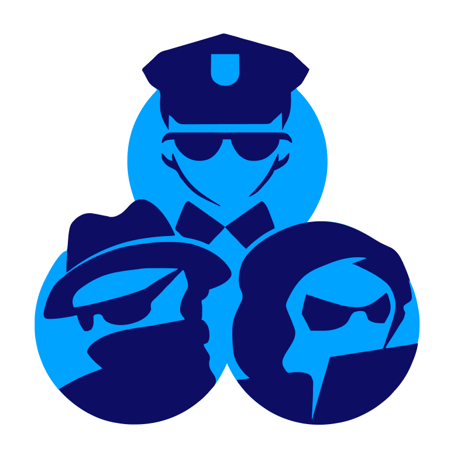

GIKO: Get In - Keep Out
Keywords: Game, Unreal Engine, 3D, Multiplayer, Animation, NPCs, UI
An asymmetrical, three-player, role-based game, where two players
need to work together to infiltrate a restricted facility, guarded
by the third player and their fleet of security bots.
read more →